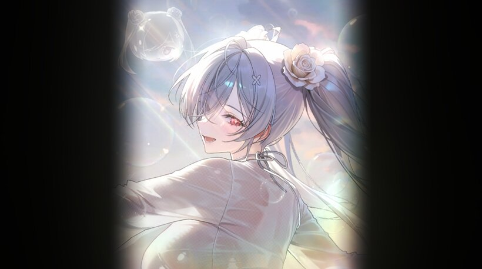
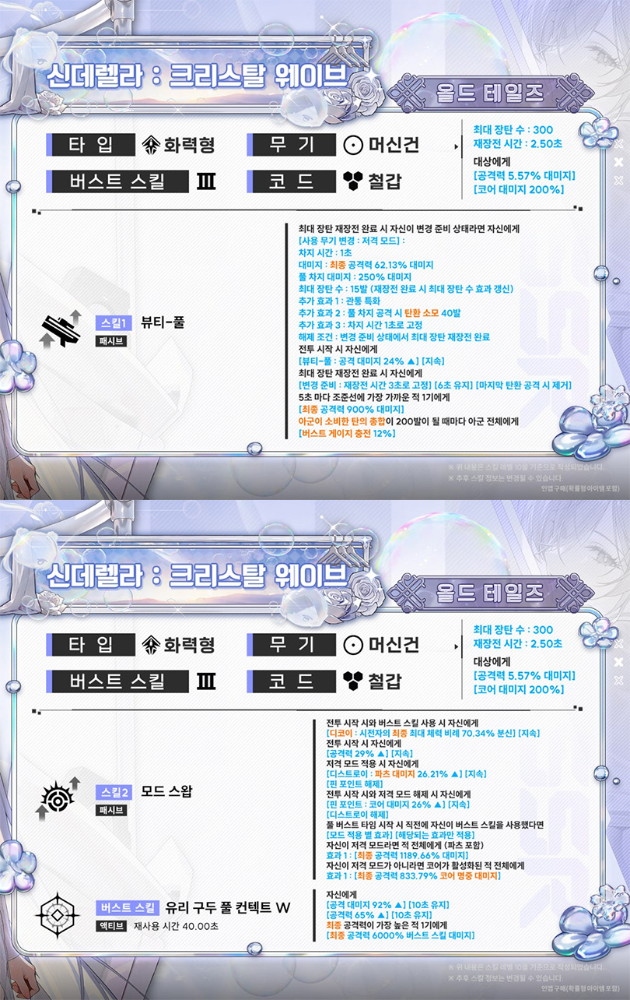
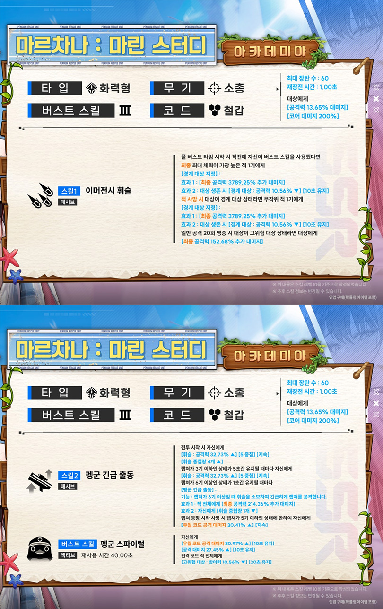
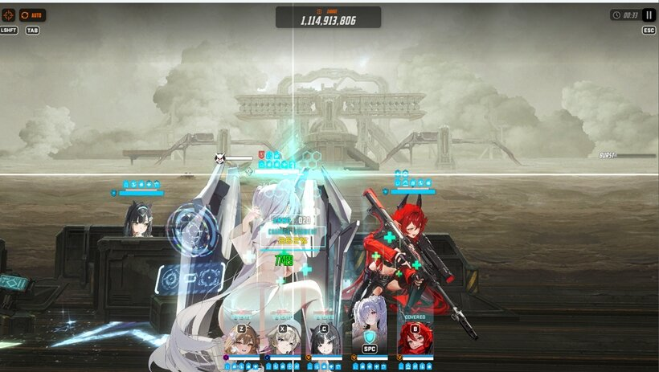
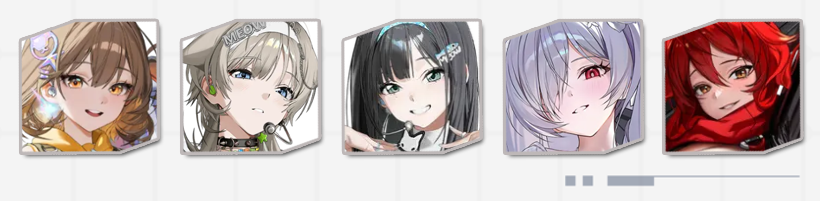

니케 티어표 7월 수렐라·수마르차나 SS 초기평가
'승리의 여신: 니케'가 7월 2일 업데이트로 여름 시즌을 열면서 기간 한정 SSR 두 기가 한꺼번에 모집에 들어왔는데요. 벌써 일본 쪽 커뮤니티에서는 둘 다 SS 티어로 매기는 분위기라, 니케 티어표를 다시 들여다보는 지휘관이 많아진 것 같습니다. 이번 글에서는 신규 SSR '신데렐라: 크리스탈 웨이브'와 '마르차나: 마린 스터디'가 어떤 캐릭터인지, 그리고 지금 나온 SS 평가를 얼마나 믿고 뽑아도 되는지를 정리해보겠습니다.

이번 여름 신규 SSR '신데렐라: 크리스탈 웨이브' 일러스트
이미지: 인벤
- 7월 2일 여름 시즌 업데이트로 신규 스토리 'WAVE TO YOU' 시작, 리딤 코드는 WAVETOYOU2026
- 기간 한정 SSR '신데렐라: 크리스탈 웨이브'(7/2~7/23)·'마르차나: 마린 스터디'(7/9~7/30) 동시 모집
- 일본 커뮤니티는 둘 다 SS 티어로 평가하지만, 한섭 실측 데이터는 아직 형성 중이라 확정 티어는 아님
- 작년 여름 한정 '도로시: 세렌디피티'·'일레그: 붐 앤 쇼크'도 같은 기간 복각 모집
최종 업데이트: 2026.07.12
여름 시즌 업데이트 'WAVE TO YOU', 뭐가 새로 열렸나
7월 2일 점검 이후로 여름 시즌 스토리 이벤트 'WAVE TO YOU'가 시작됐습니다. 졸업 여행을 떠난 '마르차나' 일행과 '신데렐라' 일행이 특수 해역에서 만나 어느 섬을 함께 탐험하는 이야기고요. 콘텐츠 쪽으로는 잔해·표류물을 치우는 미니게임 'ISLAND BREAKER'도 같이 들어왔습니다. 리딤 코드도 하나 풀렸는데, 게임 내 쿠폰(리딤) 메뉴에 WAVETOYOU2026을 입력하면 됩니다.
이번 시즌에 모집·복각되는 캐릭터를 기간별로 정리하면 아래 표와 같습니다. 신규 두 기는 모집 시작일이 하루씩 다르고, 복각 두 기도 신규 캐릭터와 같은 기간에 맞춰 나눠 들어왔다는 게 특징입니다.
| 캐릭터 | 모집 기간 | 비고 |
|---|---|---|
| 신데렐라: 크리스탈 웨이브(수렐라) | 7/2~7/23 | 신규 SSR |
| 마르차나: 마린 스터디(수마르차나) | 7/9~7/30 | 신규 SSR |
| 도로시: 세렌디피티 | 7/2~7/23 | 복각(작년 여름 한정) |
| 일레그: 붐 앤 쇼크 | 7/9~7/30 | 복각(작년 여름 한정) |
복각 두 기는 지난해 여름 한정으로 나왔다가 이번에 다시 픽업에 걸린 경우라, 그때 놓치신 분들은 이번이 재도전 타이밍입니다. 다만 이번 글의 중심은 신규 SSR 쪽이니, 복각 캐릭터와 팝업스토어·콘서트 같은 오프라인 행사 일정은 아래 링크로 대신하겠습니다.
WAVE TO YOU 이벤트 진행 상황과 여름 팝업스토어·밴드 콘서트 일정, 복각 코스튬까지는 지난 글에서 따로 정리했습니다 → 니케 여름 팝업스토어 D-11, WAVE TO YOU 정리
• • •
신데렐라: 크리스탈 웨이브·마르차나: 마린 스터디, 뭐가 다른가
둘 다 3버스트(버스트3)·화력형·철갑 코드라는 큰 틀은 같지만, 실제로 싸우는 방식은 정반대에 가깝습니다. '신데렐라: 크리스탈 웨이브'(수렐라)는 유리구두로 적을 공격하다가 버스트 스킬로 자신의 공격력을 끌어올린 뒤 다수의 적에게 피해를 뿌리는, 전형적인 광역 화력형입니다. 반면 '마르차나: 마린 스터디'(수마르차나)는 적의 수가 적을 때 능력이 강해지는 특성을 갖고 있어서, 버스트로 자신을 강화한 다음 한 표적에게 집중하는 소수 타겟 특화 쪽에 가깝습니다.
| 항목 | 신데렐라: 크리스탈 웨이브(수렐라) | 마르차나: 마린 스터디(수마르차나) |
|---|---|---|
| 모집 기간 | 7/2~7/23 | 7/9~7/30 |
| 클래스·코드 | 화력형·철갑 | 화력형·철갑 |
| 무기 | 머신건 | 소총 |
| 싸우는 방식 | 버스트로 자강 후 다수 적 광역 타격 | 적 수 적을수록 강화, 버스트로 자강 후 소수 집중 타격 |

'신데렐라: 크리스탈 웨이브' 공식 스킬 정보 — 버스트3·화력형·머신건
이미지: 게임메카

'마르차나: 마린 스터디' 공식 스킬 정보 — 버스트3·화력형·소총
이미지: 게임메카
• • •
지금 도는 니케 티어표, 얼마나 믿어야 하나
여기서부터가 이번 글의 핵심입니다. 2026년 7월 10일 시점으로 확인한 일본 커뮤니티 티어표에서는 수렐라·수마르차나가 나란히 SS 티어로 분류되는 분위기입니다. 여기에 6월 11일부터 7월 2일까지 특별모집으로 먼저 나왔던 '아크레인저 블랙'도 같은 SS 티어로 함께 거론되는데, 이쪽은 여름 신규 2기보다 앞서 나온 6월 캐릭터라 등장 시점이 다르다는 점은 구분해서 봐야 합니다. 특히 수렐라는 스토리 모드와 솔로 보스 레이드 같은 콘텐츠에서 "무조건 뽑자"급으로 높게 평가받는 반면, PVP(어택·디펜스)에서는 활용도가 떨어진다는 평가가 같이 따라붙습니다.
다만 이 SS 평가는 어디까지나 일본 서버 기준의 초기 반응이라는 점을 짚고 넘어가야 할 것 같습니다. 한섭도 같은 기간(7/2~7/23, 7/9~7/30)에 신데렐라·마르차나가 똑같이 정식 반영됐지만, 이 시점 기준으로 한섭 커뮤니티의 실측 딜파싱이나 클리어 데이터가 일섭만큼 쌓였다고 보긴 어렵습니다. 그러니 지금 도는 SS 티어는 확정된 최종 티어가 아니라 초기 평가로 받아들이시는 게 맞습니다. 며칠~몇 주 정도 실전 데이터가 더 쌓인 뒤에 순위가 조정될 가능성도 열어두시길 권합니다.
| 캐릭터 | 일섭 초기 평가(2026.07.10 기준) | 한섭 실측 데이터 |
|---|---|---|
| 신데렐라: 크리스탈 웨이브 | SS 티어 — 스토리·솔로 보스 레이드 강세, PVP는 약세 | 형성 중 |
| 마르차나: 마린 스터디 | SS 티어 — 적 소수인 콘텐츠에서 강세 | 형성 중 |
| 아크레인저 블랙 | SS 티어 — 6월 특별모집(6/11~7/2), 여름 신규 2기보다 앞서 나와 함께 거론 | 형성 중 |

실제 전투 화면 — 이런 실측 데이터가 쌓여야 한섭 티어도 자리를 잡습니다
이미지: 인벤
"일섭 SS 평가는 참고, 확정 티어는 아직입니다."
비교 기준을 잡기 위해 이미 정립된 상위권 캐릭터도 같이 짚어보겠습니다. '크라운'은 버퍼·탱커·딜러 역할을 다 소화하는 만능형으로 오래전부터 상위권에 자리 잡고 있고, '리틀 머메이드'·'스노우 화이트'·'라피'·'리버렐리오'·'레드 후드' 등도 콘텐츠를 가리지 않고 꾸준히 좋은 평가를 받아온 캐릭터들입니다. 이쪽은 데이터가 오래 쌓인 만큼 평가가 안정적인 반면, 수렐라·수마르차나는 이제 막 나온 따끈따끈한 신캐릭터라 아직은 '기대주' 단계로 보는 게 정확합니다.
그래서 뽑아야 하나 — 콘텐츠별로 나눠보면
스토리·솔로 보스 레이드 위주로 플레이하신다면 수렐라 쪽은 지금 시점에도 뽑을 이유가 충분해 보입니다. 광역 화력형이라 다수 적을 상대하는 스토리 구간에서 체감이 크고, 일섭 평가도 이 콘텐츠에서 특히 후한 편입니다. 반대로 PVP(어택·디펜스)가 주력이시라면 지금 확인된 평가만으로는 우선순위를 높게 둘 이유가 적습니다.

커뮤니티에서 도는 신데렐라 조합 예시 중 하나
이미지: 인벤
마르차나는 적 수가 적은 상황에서 강해지는 특성상, 보스전처럼 적이 소수인 콘텐츠에 편성이 맞는 캐릭터입니다. 다수를 상대하는 구간보다는 한 방을 확실히 넣어야 하는 자리에 어울리는 타입이라, 이미 화력형 딜러가 갖춰진 지휘관이라면 급하게 서두르기보다는 자신의 스쿼드 구성과 맞는지부터 따져보시는 걸 추천합니다.
무·소과금 관점에서는 한 가지만 기억하시면 좋겠습니다. 니케는 한정 캐릭터의 재판매(복각)까지 시간이 걸리는 게임입니다. 이번에 복각된 도로시·일레그도 작년 여름 한정이었다가 딱 1년 만에 돌아온 경우고요. 그러니 지금 당장 재화가 빠듯하다면 무리해서 둘 다 잡기보다는, 본인이 자주 플레이하는 콘텐츠(스토리·솔로 레이드 vs PVP)에 더 맞는 쪽 하나를 우선순위로 잡고, 나머지는 재화 상황과 이후 실측 평가를 좀 더 지켜본 뒤 판단하시는 걸 권합니다.
정리하면 — 이번 여름 니케, 이렇게 접근하면 됩니다
둘 중 하나만 고르신다면 기준은 의외로 단순합니다. 스토리·솔로 보스 레이드를 주로 도신다면 광역 화력형인 신데렐라 쪽이, 적이 소수인 보스전 딜을 더 다지고 싶다면 마르차나 쪽이 더 잘 맞습니다. 모집 마감이 신데렐라는 7/23, 마르차나는 7/30이라 신데렐라가 먼저 끝난다는 점도 우선순위를 잡을 때 참고하시면 좋겠습니다.
여름 한정 캐릭터는 이번에 복각된 도로시·일레그처럼 보통 1년 뒤 같은 시즌에 다시 돌아오는 흐름이라, 완전히 못 뽑게 사라지는 건 아닙니다. 그래도 다시 만나기까지 시간이 꽤 걸리는 만큼, 지금 콘텐츠에 꼭 필요하다면 이번 기간을 놓치지 않는 게 안전하죠. 다만 재화가 빠듯하다면 무리해서 둘 다 잡기보다 필요한 쪽 하나에 집중하는 것도 방법입니다. 지금 도는 SS 평가는 어디까지나 일본 서버 기준 초기 반응이라, 확정 티어처럼 받아들이기보다 본인 콘텐츠 궁합까지 같이 따져서 판단하시는 걸 권합니다.
이번 여름 SSR 두 기는 확실히 화제성은 있는데, 아직 한섭 데이터가 덜 쌓인 초기 평가라는 점만 기억해두시면 좋겠습니다. 앞으로 며칠 사이 한섭 실측 데이터가 더 쌓이면 이 글도 갱신하겠습니다.